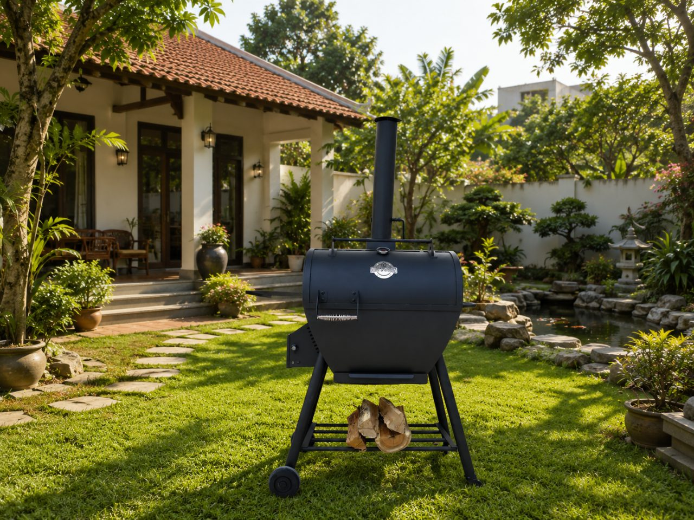

Giữ trọn hương than hồng cho cả nhà — bỏ đi làn khói khét khiến ai cũng phải tránh. Vấn đề không nằm ở miếng thịt, mà ở đúng khoảnh khắc mỡ rơi vào than. Đây là cách lò nướng than tách khói Duy's Oven xử lý tận gốc.

Bạn đặt miếng ba chỉ, miếng sườn lên vỉ. Mỡ bắt đầu chảy, rơi xuống lớp than đỏ rực bên dưới — và bùng. Một cột lửa nhỏ liếm lên, kéo theo làn khói đen cuộn lên mặt thịt. Người đứng nướng nghiêng đầu né, cay xè mắt. Nướng xong, cả nhà ai cũng ám mùi: tóc, áo quần, rèm cửa. Cuối tuần đáng ra là lúc sum vầy, lại thành cuộc chiến với khói.
Khói khét sinh ra từ đâu?
Hãy gọi đúng tên thủ phạm. Khói khét không tự nhiên bốc lên từ miếng thịt — nó sinh ra khi mỡ và nước thịt nhỏ giọt thẳng xuống than đang cháy, gây bùng lửa rồi tạo khói. Làn khói đó mới là phần đáng ngại: nó bám ngược lên bề mặt món ăn và bay thẳng vào mũi người nướng.
Nói cho dễ hiểu: thủ phạm chính không phải bản thân miếng thịt, mà là mỡ rơi xuống than đỏ rồi bốc thành khói khét. Một hướng đơn giản để bắt đầu: chọn cách nướng không để mỡ rơi trực tiếp xuống than.
Tách khói hoạt động thế nào?
Thay vì lắp thêm quạt hút để "chữa cháy" sau khi khói đã sinh ra, Duy's Oven thiết kế lại khoang đốt để khói khét không có cơ hội hình thành ngay từ đầu. Ba trụ cột:
- Tách khói tận gốc — mỡ không chạm than. Hai hộc than đặt sát hai bên hông, không nằm dưới thức ăn. Mỡ chảy xuống khay hứng ở giữa, không bao giờ chạm than — không bùng lửa, không khói khét.
- Nhiệt đối lưu đều. Quạt 7W thổi qua hộp dẫn gió ở giữa, đẩy nhiệt từ hai hộc than lan đều khắp khoang — thức ăn chín đều, không cần trở vỉ liên tục.
- Hút phần khói còn lại. Trên các dòng có ống khói (như Hybrid 65L), ống khói cao 60 cm tạo lực hút tự nhiên, đưa phần khói ít ỏi còn lại thoát thẳng lên cao.
Tách khói hoạt động thế nào?
Cơ chế trên lò tách khói TK65L — nhìn từ mặt cắt
Lò than thường và Duy's Oven — khác ở đâu?
Cùng một mẻ thịt, nhưng số phận khác hẳn nhau chỉ vì mỡ đi đâu:
Thép thật, lửa thật — vẫn là vị than hồng
Đây không phải bếp gas giả khói, cũng không phải nồi điện. Duy's Oven là thép thật, lửa thật: thân sắt sơn chịu nhiệt, vỉ inox tiếp xúc thực phẩm, chế tác thủ công, cân chỉnh giữ nhiệt ổn định cả buổi nấu dài. Mỗi chiếc lò đều mang dấu tay người thợ Việt — 100% thủ công Việt Nam.
Bạn không phải đánh đổi hương vị để lấy sự an tâm. Vị khói than hồng vẫn còn nguyên — chỉ riêng khói khét (phần do mỡ cháy sinh ra) là bị chặn từ gốc. Với dân mê nướng chuyên sâu, dòng offset smoker còn nấu được low & slow ở 110–135°C trong 6–18 giờ cho mẻ brisket "mềm như bơ", với khói gỗ sạch và có kiểm soát.
Hiểu nhanh: than vẫn cháy thật để cho ra hương vị — chỉ có mỡ và khói khét bị "tách" ra khỏi đường đi của đồ ăn.
Chọn lò theo nhu cầu
Duy's Oven có hơn 50 sản phẩm. Để khỏi rối, đây là vài gợi ý theo đúng nhu cầu của bạn:
Mỗi lò đều có bảo hành thân 12 tháng, giao tận nơi toàn quốc, kèm hướng dẫn nhóm lò và vệ sinh. Sản phẩm cũng đã được trải nghiệm và đánh giá độc lập trên Mytour và Tinhte — không chỉ là lời tự nói. Chưa chắc nên chọn cỡ nào? Đọc thêm lò nướng than tách khói là gì, hoặc hỏi thẳng trợ lý AI của Duy's Oven.
Nướng than vốn là chuyện của sum vầy. Đừng để khói khét lấy mất điều đó. Vẫn vị than hồng quen thuộc — chỉ là lần này, ai cũng được ngồi lại gần.